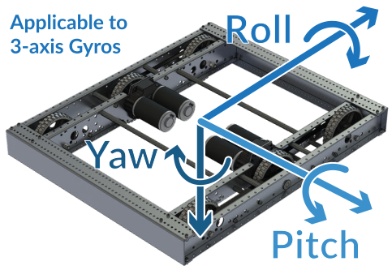

Lab 8: Turn with a Gyro (NavX2)#
Why it matters#
In Lab 7, the timed square never closed. Every "90° turn" was really just "spin for half a second," and the robot had no idea how far it had actually turned.
A gyro fixes that. It measures how far the robot has rotated, so instead of "spin for 0.5 seconds" you can say "spin until you've turned 90°." In this lab you'll add the team's NavX2 to the West Coast Drive, read the robot's heading, and use it to make turns that land where you meant.
Before you start: finish Lab 7 and keep its repeatability table. You'll add to the same WestCoastDrive project. Lesson 8 covers gyros. Lesson 4.3 covers the NavX2's hardware and mounting.
Read this#
Walkthrough#
What a gyro measures#
The NavX2 measures rotation around three axes. For driving, the one that matters is yaw: how far the robot has turned left or right, seen from above. That's the robot's heading.
| Robot turns | Heading (WPILib convention) |
|---|---|
| Left (counterclockwise from above) | Goes up |
| Right (clockwise from above) | Goes down |

Yaw is the robot turning left or right. That's the heading. From the WPILib docs, Gyroscopes - Hardware (CC BY 4.0).
The heading keeps counting past 360°. Spin left twice and it reads about 720°.
Two sign conventions
The NavX's own getAngle() and getYaw() count clockwise as positive. WPILib counts counterclockwise as positive. To avoid mixing them up, this lab only uses getRotation2d(), which already follows WPILib's convention.
The hardware#
The NavX2 plugs into the roboRIO's MXP port (the wide connector in the middle). It talks to the roboRIO over SPI through that port.
If your NavX is connected differently
Over USB, use NavXComType.kUSB1 instead of kMXP_SPI in Step 3. Everything else stays the same.
Step 1: Calibration#
When the robot powers on, the NavX spends a few seconds calibrating: measuring itself while sitting perfectly still. If the robot moves during that time, the heading will drift for the rest of the session.
Keep it still at power-on
Turn on the robot and don't touch it for about 10 seconds. You'll add a dashboard light in Step 4 that shows when calibration is done.
Step 2: Install the NavX library#
The NavX library comes from Studica, the company that makes it.
- Open WPILib → Vendor Dependencies in the VS Code sidebar.
- Find Studica (the NavX library) and click Install.
- If it isn't in the list, use Ctrl+Shift+P → WPILib: Manage Vendor Libraries → Install new library (online) and paste the vendordep URL from Studica's NavX documentation.
- Check that a Studica
.jsonfile appears invendordeps/.
Step 3: Add the gyro to the drive subsystem#
Open DriveSubsystem.java. Add the imports:
import com.studica.frc.AHRS;
import com.studica.frc.AHRS.NavXComType;
Add the gyro as a field:
// NavX2 on the roboRIO's MXP port, talking over SPI
private final AHRS m_gyro = new AHRS(NavXComType.kMXP_SPI);
| Part | What it means |
|---|---|
AHRS |
Studica's class for the NavX. AHRS stands for "attitude and heading reference system": a sensor that knows which way it's pointing. |
NavXComType.kMXP_SPI |
How the NavX talks to the roboRIO: plugged into the MXP port, using the fast SPI connection |
Add methods to read and reset the heading:
/** Robot heading in degrees. Turning left (counterclockwise) makes it go up. */
public double getHeadingDegrees() {
return m_gyro.getRotation2d().getDegrees();
}
/** Makes the current direction the new 0°. Works while disabled. */
public Command zeroHeadingCommand() {
return runOnce(m_gyro::reset).ignoringDisable(true).withName("Zero Heading");
}
| Code | What it does |
|---|---|
m_gyro.getRotation2d() |
The robot's heading as a WPILib Rotation2d, where left (counterclockwise) is positive, the WPILib standard |
.getDegrees() |
Turns that into a plain number of degrees |
runOnce(m_gyro::reset) |
Makes "the way the robot is pointing right now" the new 0° |
.ignoringDisable(true) |
Lets you zero it while the robot is disabled, before a match |
Step 4: Show it on the dashboard#
Add to the drive subsystem's periodic(). These go in Telemetry → Drive, in a Gyro folder:
m_telemetry.log("Gyro/Heading (deg)", getHeadingDegrees());
m_telemetry.log("Gyro/Connected", m_gyro.isConnected());
m_telemetry.log("Gyro/Calibrating", m_gyro.isCalibrating());
And bind a button to zero the heading, in configureBindings():
m_controller.back().onTrue(m_driveSubsystem.zeroHeadingCommand());
Step 5: Check the gyro by hand#
Deploy. Leave the robot disabled. Wait until Calibrating shows false and Connected shows true.
- Press Back to zero the heading. It reads about 0.
- Push the robot by hand so it turns left about a quarter turn. The heading should read about +90.
- Turn it back. The heading returns to about 0.
- Turn it right a quarter turn. About −90.
- Leave it completely still for a minute and watch the heading. Does it change at all? That slow creep is drift, and every gyro has a little.
If Connected is false, check the NavX is fully seated on the MXP port and that the library is installed.
Step 6: Turn by the gyro (bang-bang)#
Now replace "spin for 0.5 seconds" with "spin until the heading changes by 90°." Add to DriveSubsystem:
private double m_turnTarget = 0.0;
/**
* Spins in place until the heading has changed by the given degrees.
* Positive = turn left, negative = turn right.
*/
public Command turnDegreesCommand(double degrees, double speed) {
double direction = Math.signum(degrees); // +1 for left, -1 for right
return runOnce(() -> m_turnTarget = getHeadingDegrees() + degrees)
.andThen(run(() -> m_drive.tankDrive(-direction * speed, direction * speed, false)))
.until(() -> direction > 0
? getHeadingDegrees() >= m_turnTarget // turning left: wait until we pass the target
: getHeadingDegrees() <= m_turnTarget) // turning right: wait until we pass it going down
.withTimeout(3.0) // safety: give up if the gyro never gets there
.finallyDo(() -> m_drive.stopMotor())
.withName("Turn " + degrees + " deg");
}
Reading it:
| Piece | What it does |
|---|---|
private double m_turnTarget |
A field, so periodic() can show the target on the dashboard while the turn runs |
double direction = Math.signum(degrees); |
Math.signum gives +1 for a positive number and -1 for a negative one. Positive degrees means turn left, so direction is +1 for left and -1 for right. |
runOnce(() -> m_turnTarget = getHeadingDegrees() + degrees) |
Remembers where to stop: 90° from wherever the robot is now |
tankDrive(-direction * speed, direction * speed, false) |
Spins in place. For a left turn, left side back and right side forward. |
.until(...) |
Stops the moment the heading reaches the target |
direction > 0 ? A : B |
A ternary: "if turning left, use check A; otherwise use check B." Turning left, the heading goes up to the target (>=); turning right, it goes down (<=). |
.withTimeout(3.0) |
If the gyro is unplugged, the heading never changes. This stops the robot anyway. |
Add the debug values to periodic() so you can watch it:
m_telemetry.log("Gyro/Turn Target (deg)", m_turnTarget);
m_telemetry.log("Gyro/Turn Error (deg)", m_turnTarget - getHeadingDegrees());
Bind it to test, in configureBindings():
m_controller.x().onTrue(m_driveSubsystem.turnDegreesCommand(90, 0.4)); // turn left 90°
m_controller.b().onTrue(m_driveSubsystem.turnDegreesCommand(-90, 0.4)); // turn right 90°
On the floor, in open space: press X, let the robot turn, and read Heading after it stops. Try speeds of 0.3, 0.5, and 0.7.
| Speed | Target | Where it stopped | Overshoot |
|---|---|---|---|
| 0.3 | 90 | ||
| 0.5 | 90 | ||
| 0.7 | 90 |
What you'll see: It always turns at least 90°, so it's far better than timing. But it overshoots, more at higher speeds. When the gyro says "90!", the robot is still spinning and takes time to stop. It's the same bang-bang overshoot you saw on the wheel in Lab 6.
Step 7: Slow down near the end#
One simple fix: turn fast for most of the way, then slow for the last part. This command picks its speed every loop from how far it still has to turn:
/** Fast until 20 degrees from the target, then slow. */
public Command twoSpeedTurnCommand(double degrees) {
double direction = Math.signum(degrees);
return runOnce(() -> m_turnTarget = getHeadingDegrees() + degrees)
.andThen(run(() -> {
double remaining = Math.abs(m_turnTarget - getHeadingDegrees());
double speed = (remaining > 20.0) ? 0.6 : 0.25; // fast far away, slow up close
m_drive.tankDrive(-direction * speed, direction * speed, false);
}))
.until(() -> direction > 0
? getHeadingDegrees() >= m_turnTarget
: getHeadingDegrees() <= m_turnTarget)
.withTimeout(3.0)
.finallyDo(() -> m_drive.stopMotor())
.withName("Two-Speed Turn " + degrees);
}
The target is set once, at the start, so the whole turn aims at the same spot. Only the speed changes along the way.
The new part is inside run(...), which now has curly braces { } because it does several things every loop:
| Line | What it does |
|---|---|
double remaining = Math.abs(m_turnTarget - getHeadingDegrees()); |
How many degrees are left. Math.abs drops the minus sign, so it works for left and right turns. |
double speed = (remaining > 20.0) ? 0.6 : 0.25; |
Another ternary: more than 20° to go, use 0.6; otherwise 0.25 |
m_drive.tankDrive(-direction * speed, direction * speed, false); |
Spin at that speed, in the right direction |
Bind it to Y:
m_controller.y().onTrue(m_driveSubsystem.twoSpeedTurnCommand(90));
Compare its overshoot with the one-speed turn from Step 6.
Think about it
Two speeds work better than one. What about ten speeds, each a bit slower as the robot gets closer? Or a speed that shrinks smoothly with the distance left to turn? That idea has a name: it's the P in PID, and it's coming in Lab 9.
Step 8: A square that closes#
Go back to RobotContainer's squareSide() from Lab 7, and swap the timed spin for a gyro turn:
private Command squareSide() {
return Commands.sequence(
m_driveSubsystem.driveForSecondsCommand(0.4, 0.4, 1.0), // forward (still timed)
m_driveSubsystem.driveForSecondsCommand(0.0, 0.0, 0.3), // pause
m_driveSubsystem.twoSpeedTurnCommand(90), // turn left by the gyro
m_driveSubsystem.driveForSecondsCommand(0.0, 0.0, 0.3)); // pause
}
Import Commands if needed. Run Square five times and fill in the same table as Lab 7. Compare the two tables.
Step 9: Commit#
git add .
git commit -m "Lab 8: NavX gyro turns"
When it doesn't work#
| Problem | Likely cause |
|---|---|
Build error: cannot find symbol AHRS |
The Studica library isn't installed (Step 2) |
| Connected is false | NavX not fully seated on the MXP port, or the wrong NavXComType |
| Heading slowly creeps while sitting still | Normal drift, but a lot of it means the robot moved during calibration. Restart the robot and keep it still. |
| Heading goes down when turning left | You used getAngle() or getYaw() instead of getRotation2d() |
| Robot spins forever, then stops after 3 seconds | It turned the opposite way from the target: check the signs in tankDrive for the turn |
Finished code
Stuck, or missed a lab? lab08-navx-gyro on GitHub is the complete project as it looks at the end of this lab. It's a full WPILib 2026 project you can open in VS Code, build, and deploy. Try to finish the lab yourself first.
Try it#
- Check the heading by hand: +90 left, −90 right
- Measure drift: how much does the heading change in one minute sitting still?
- Fill in the speed vs. overshoot table for one-speed turns
- Compare one-speed and two-speed turns
- Run the gyro square and compare with your Lab 7 table
- Turn 360° and see if the robot ends facing the same way
- Challenge: write
turnToHeadingCommand(double heading)that turns to an absolute heading (like "face 0°") instead of "turn by" an amount
Check yourself#
What does a gyro measure?
How much the robot has rotated. Yaw, the rotation seen from above, is the robot's heading.
Why must the robot stay still when it powers on?
The NavX calibrates during the first few seconds. If the robot moves, the calibration is off and the heading drifts all session.
Why use getRotation2d() instead of getAngle()?
getRotation2d() counts counterclockwise as positive, matching WPILib. The NavX's own getAngle() counts clockwise as positive, which flips every sign.
Why does turnDegreesCommand store a target instead of just using 90?
The robot might not be at 0° when the turn starts. Storing "current heading + 90" makes it turn 90° from wherever it is.
Why does the gyro turn still overshoot?
It's bang-bang: full speed until the heading reaches the target, then stop. The robot is still spinning at that moment and takes time to stop.
Why does the two-speed turn overshoot less?
It's going slower when it reaches the target, so it carries less momentum and stops sooner.